WhiskedAway · Part A · 18 October 2026
The hallway & the magic door.
The spine of the inn, in the same rainy afternoon as Cuddlecore: cool sea light, worn oak, a faded runner and warm brass dials. Ten photoreal concept and detail assets for the Blender build.
Facing the sea: Cuddlecore back left, Flourish back right, Sweet Spells front left, Chiapothecary front right. Each dial sits on the entrance side of its door. Stairs stay in the entrance hall; the clock stays in the corridor.
One building, both directions
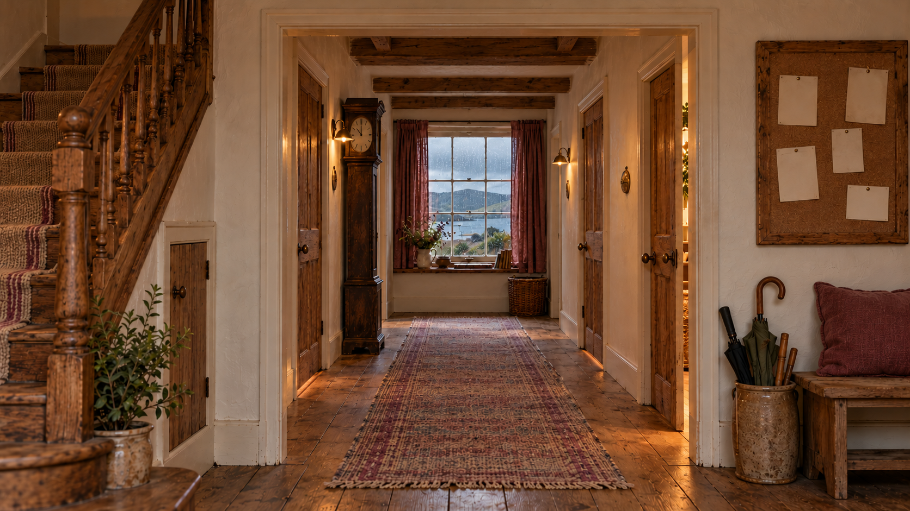

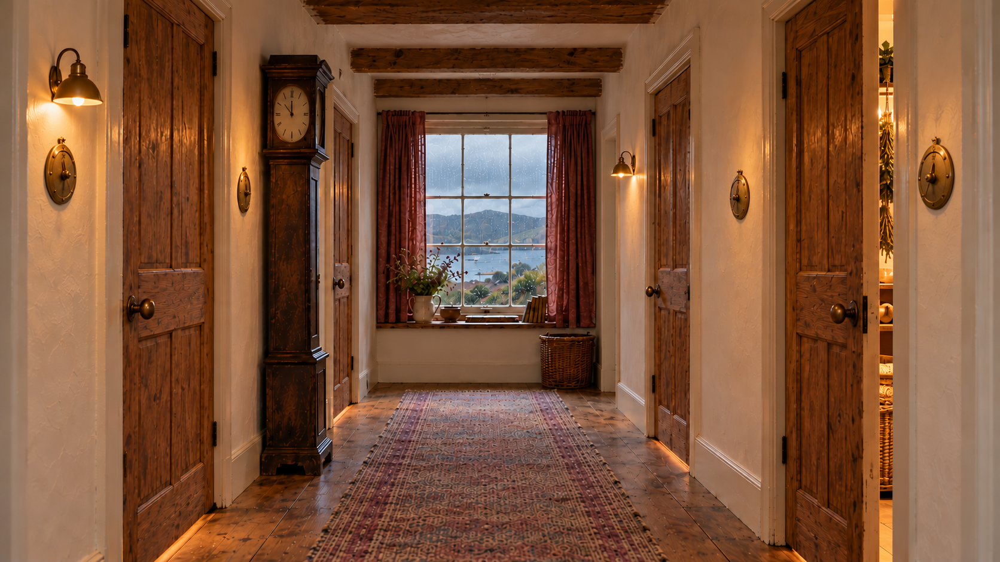

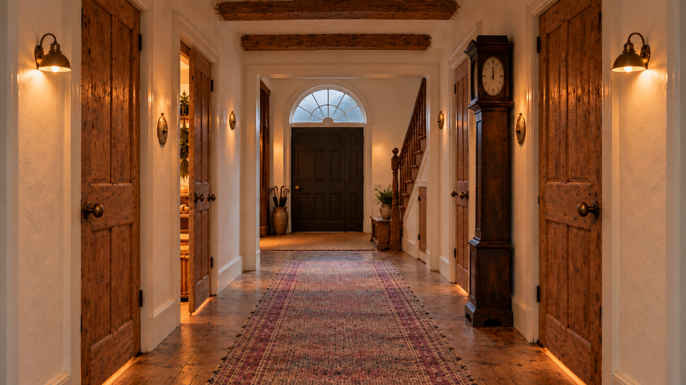

The Cuddlecore door
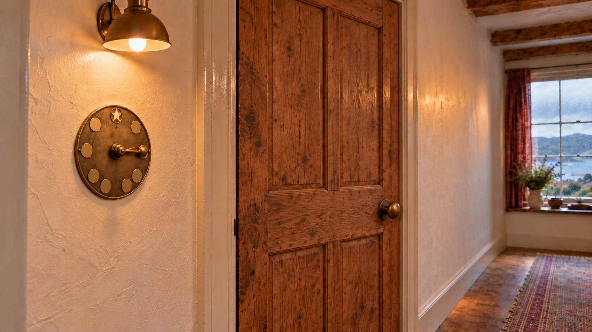

The dial, ready to build
Eight smooth blank name plates plus the star at the top. Pointer supplied separately; its hub is registered to the center of its square image. Room names are supplied only as metadata for later engraving.
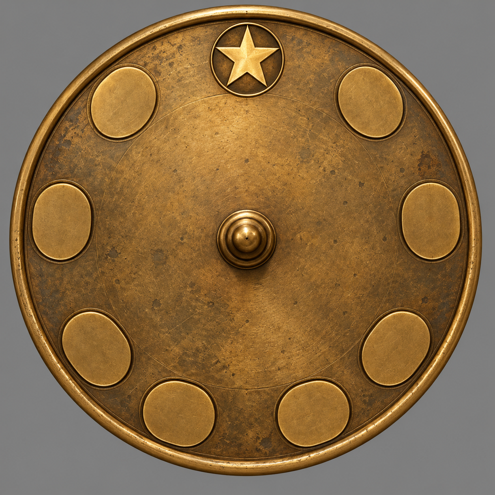

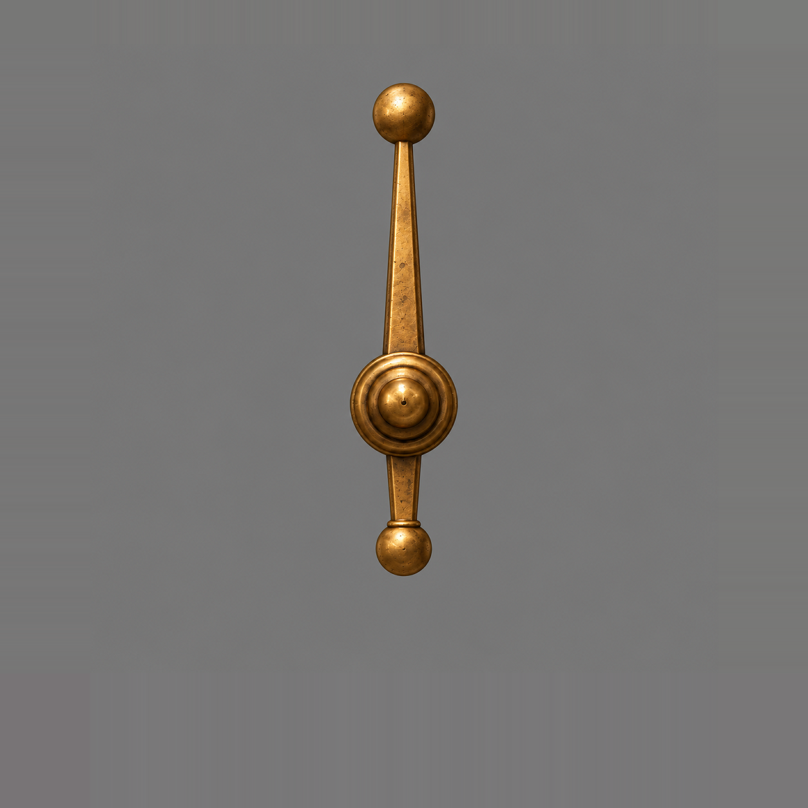

The glasshouse glimpse
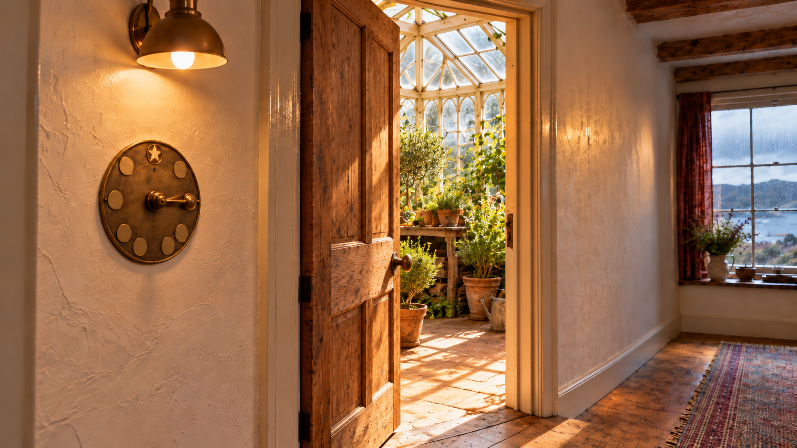

Clock & notice board
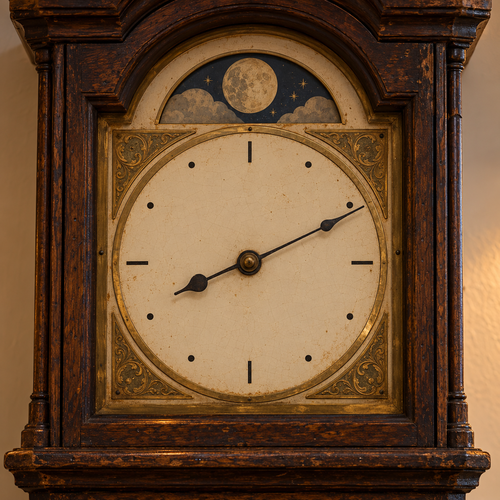

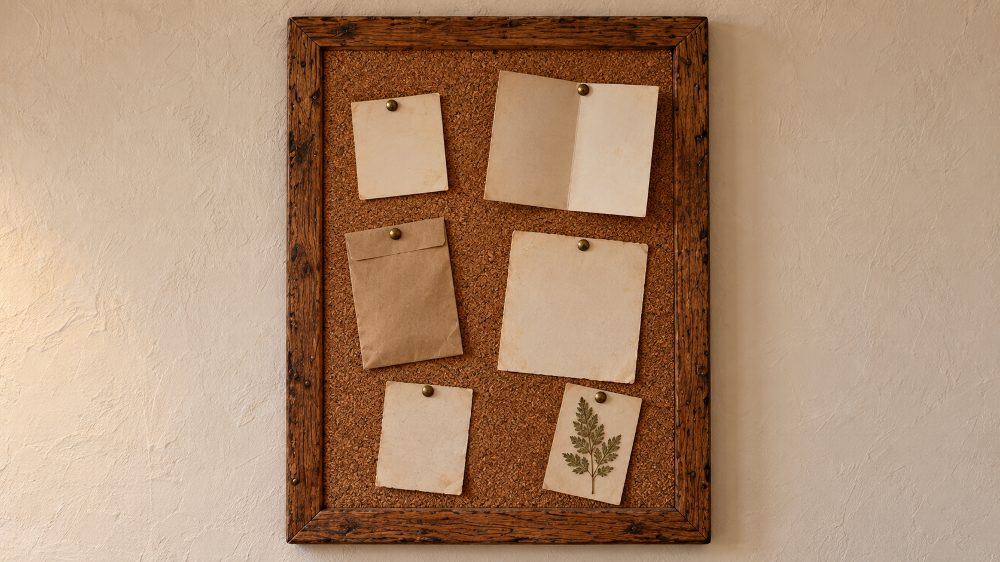

Materials
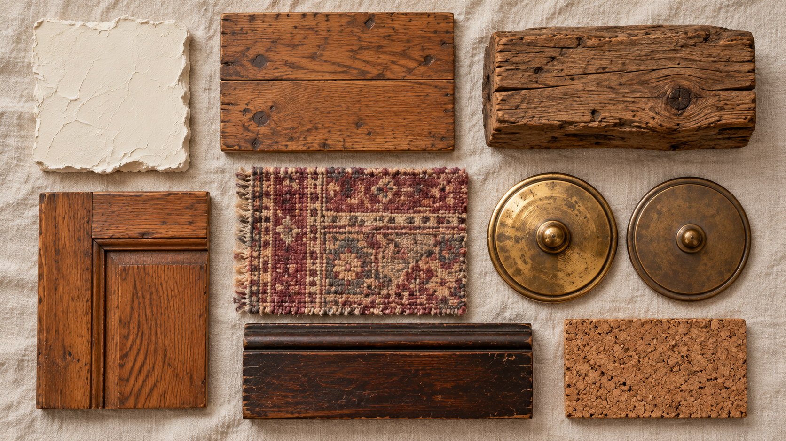

Placement authority
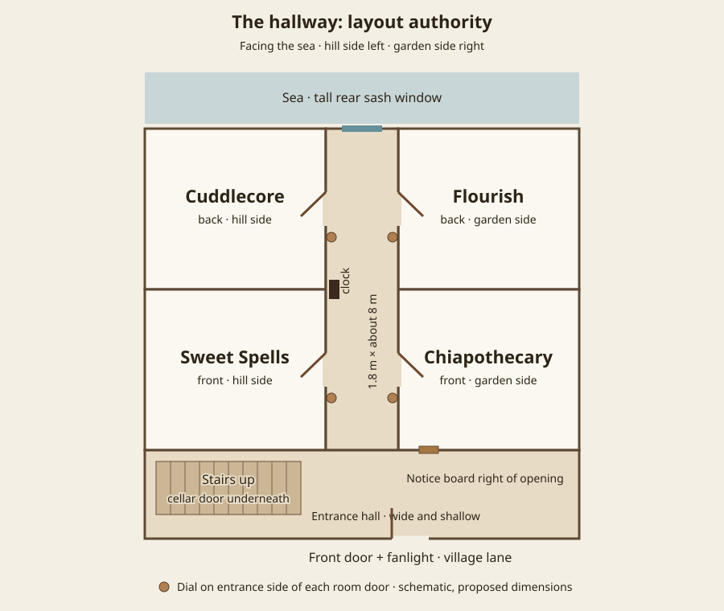
| Facing sea | Left / hill | Right / garden |
|---|---|---|
| Near entrance | Sweet Spells | Chiapothecary |
| Near sea window | Cuddlecore | Flourish |